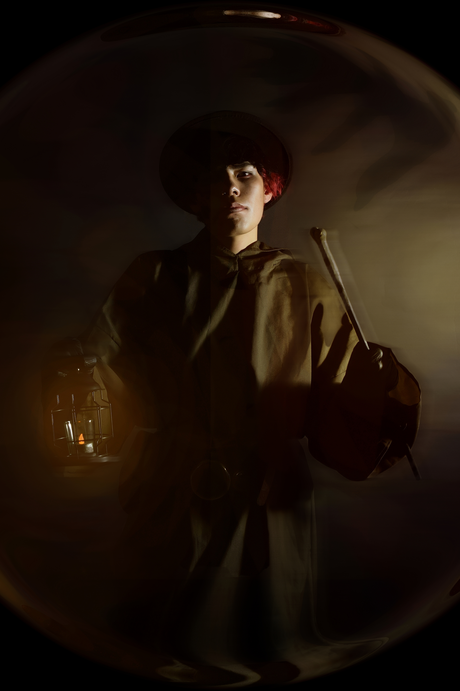
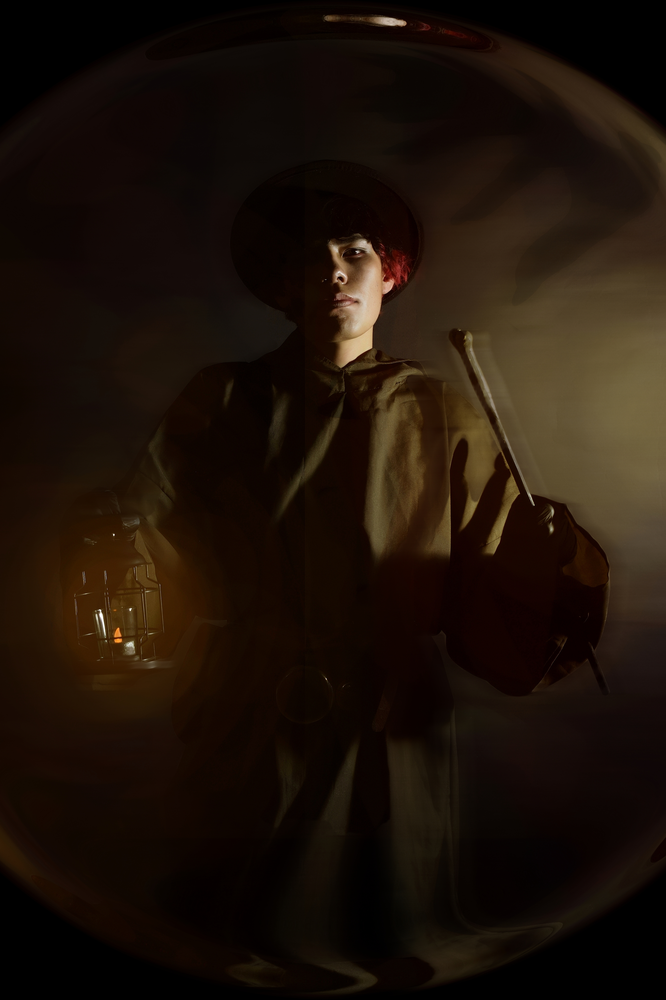

Fotografia Artistica
Este proyecto fotográfico ha sido un viaje apasionante y desafiante a la vez. Me sumergí en el mundo de la iluminación, experimentando con diferentes técnicas como el contraluz para crear atmósferas dramáticas y el uso de softbox para obtener retratos suaves y luminosos. Además, exploré diversas composiciones, jugando con la regla de los tercios y las líneas guía para dirigir la mirada del espectador.
La edición fue otra etapa fundamental. Utilicé Adobe Lightroom para ajustar el balance de blancos, el contraste y la saturación, y Photoshop para realizar retoques más detallados. Me encantó el proceso de transformar las imágenes crudas en obras de arte. Lo que más me enorgullece es haber superado mis propios límites y haber descubierto un nuevo nivel de creatividad. Aprender a dominar la luz y la composición me ha permitido expresar mi visión artística de una manera más auténtica. Este proyecto me ha enseñado la importancia de la paciencia, la perseverancia y la pasión por lo que haces.